1. 设计动机：治愈数字时代的「感知麻木」
在数字消费主义的驱动下，智能手机已成为人类感官的延伸，但其冰冷的工业属性使我们对数字焦虑和环境成本缺乏直觉感知。
我们频繁更换塑料配件，产生大量电子垃圾，却从未察觉自己与设备之间日益病态的依赖。Symbio-Shell 旨在通过合成生物学介入，将手机壳从「工业死物」转化为一个具备代谢功能和情感反馈的「共生器官」。
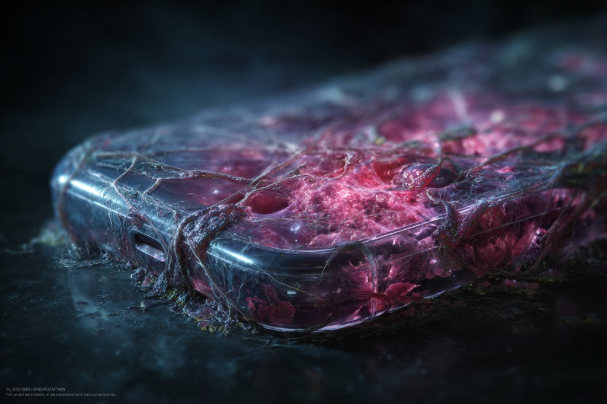
主视觉：代谢活跃状态下的壳体叙事配图（AI 概念生成 · 思辨设计）。文件 assets/symbio-hero.png。
Project
以下为完整概念阐述，与《共生壳》长页正文一致；用于展览导语与口述底稿。
项目名称 · Symbio-Shell（共生壳）
项目定义 · 一款基于生理反馈与合成生物代谢逻辑的活性手机界面
在数字消费主义的驱动下，智能手机已成为人类感官的延伸，但其冰冷的工业属性使我们对数字焦虑和环境成本缺乏直觉感知。
我们频繁更换塑料配件，产生大量电子垃圾，却从未察觉自己与设备之间日益病态的依赖。Symbio-Shell 旨在通过合成生物学介入，将手机壳从「工业死物」转化为一个具备代谢功能和情感反馈的「共生器官」。
Symbio-Shell 采用活性水凝胶作为基质，内置工程微生物系统，与用户的生理信号深度耦合：
设计赋予了外壳极具冲击力的生命语言，用生物逻辑修正人类行为：
Symbio-Shell 不仅展示了生物材料替代塑料的巨大潜力，更发起了一场关于后人类时代的伦理考问。
当手机壳拥有了「饥饿感」与「疲惫感」，它的终结不再是垃圾场的填埋，而是一场回归土壤的生物葬礼——在降解过程中滋养新的生命。它促使我们重新审视消费主义，学着去敬畏每一个与我们共生的数字生命。
Gallery
下列为项目叙事配套的 AI 概念图，对应压力充血、掌机粘连、废热代谢、失活干裂与光合复苏等设定；非实物摄影。
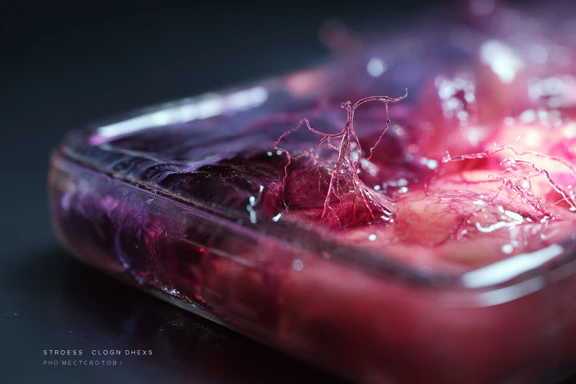
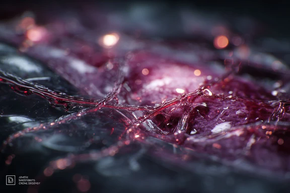
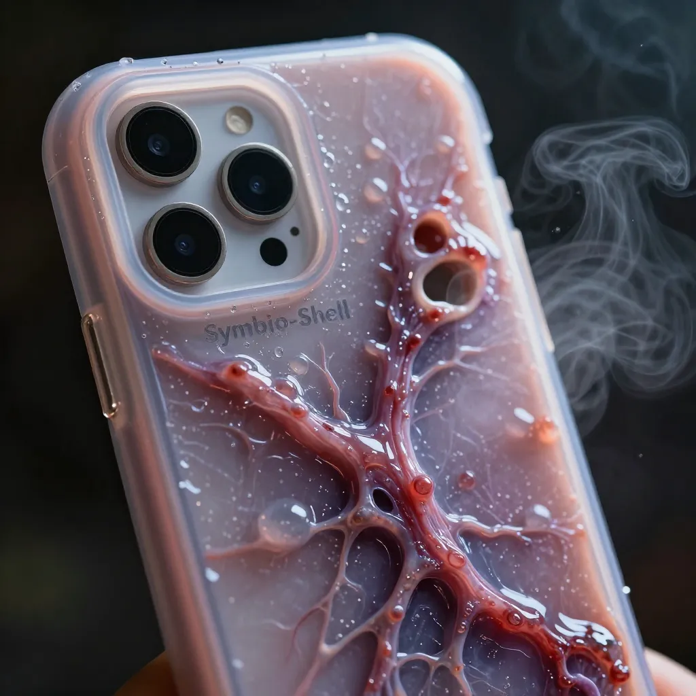
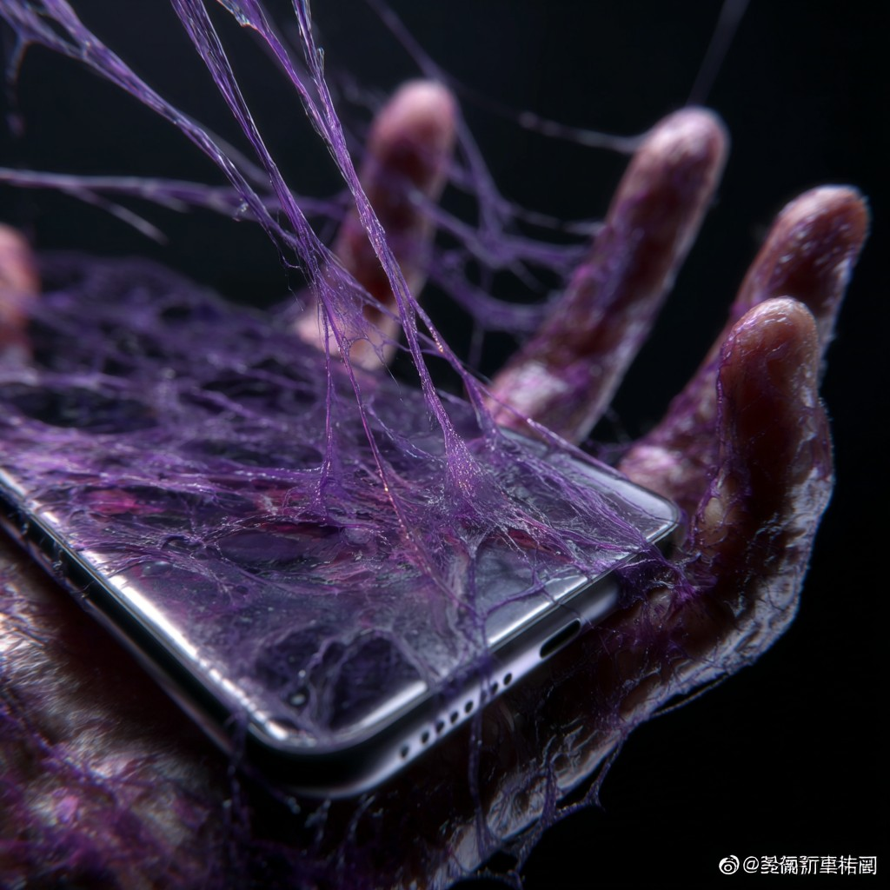
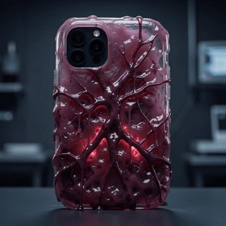
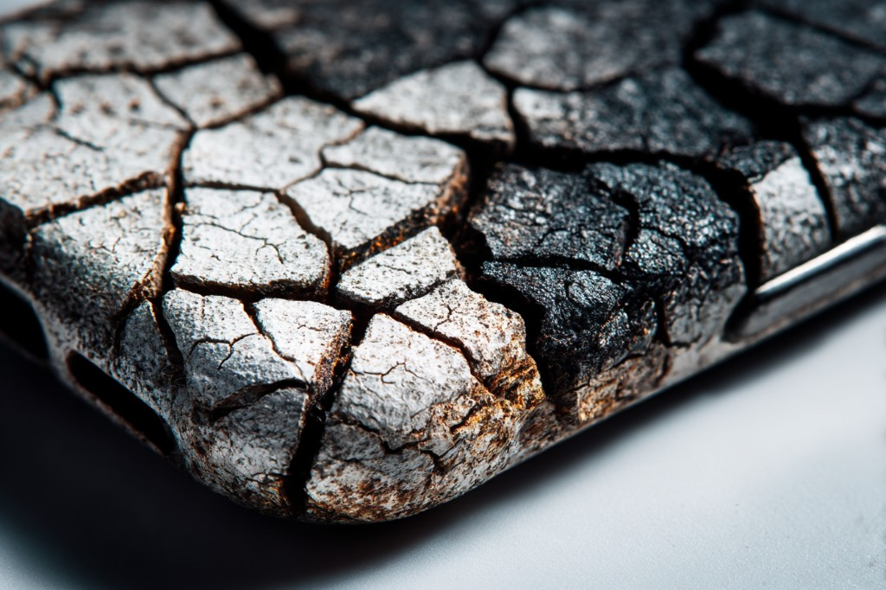
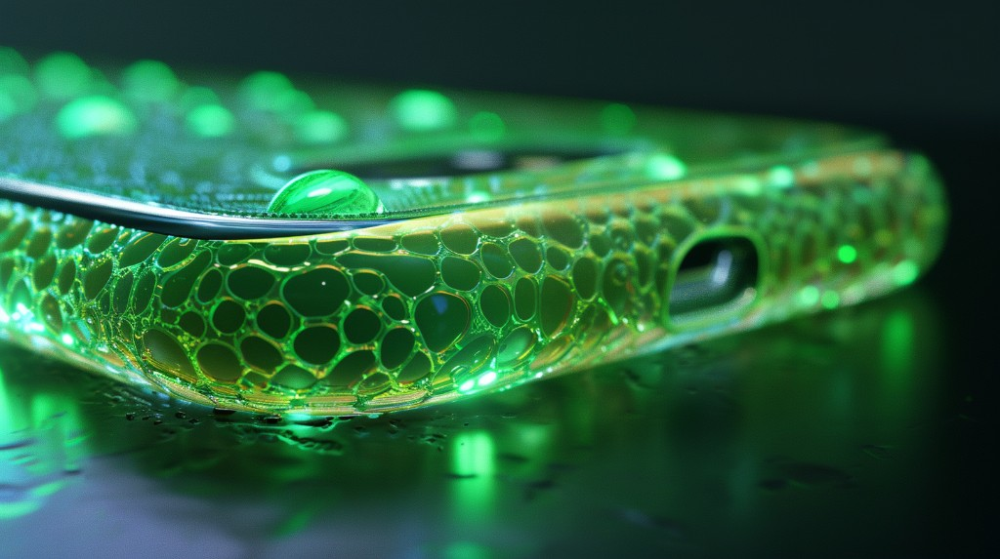
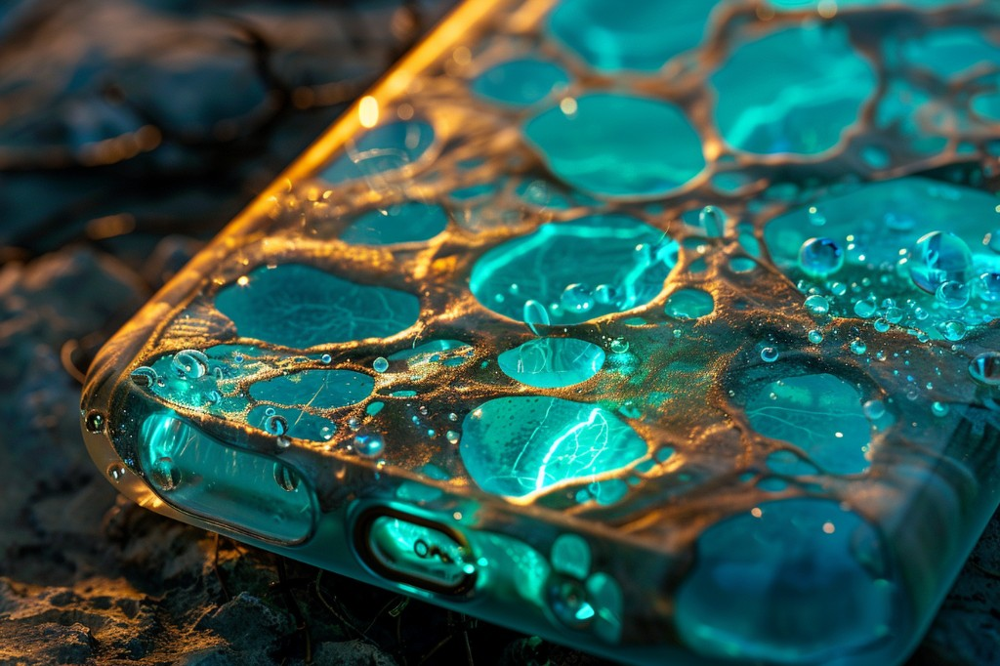
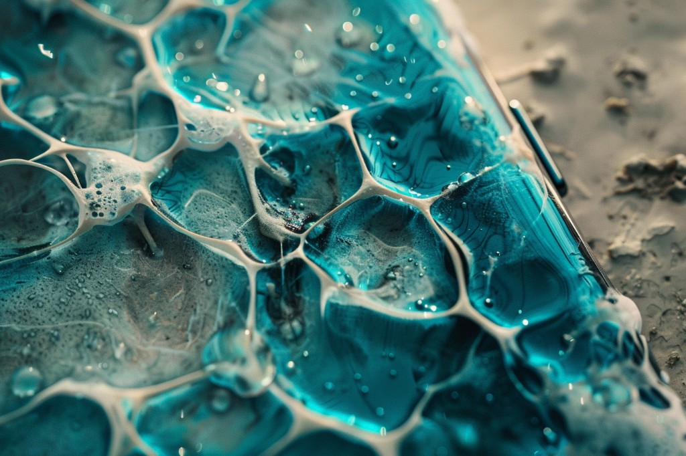

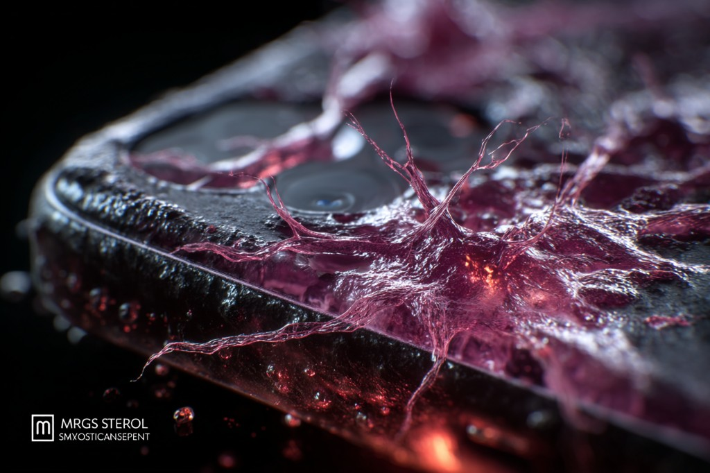
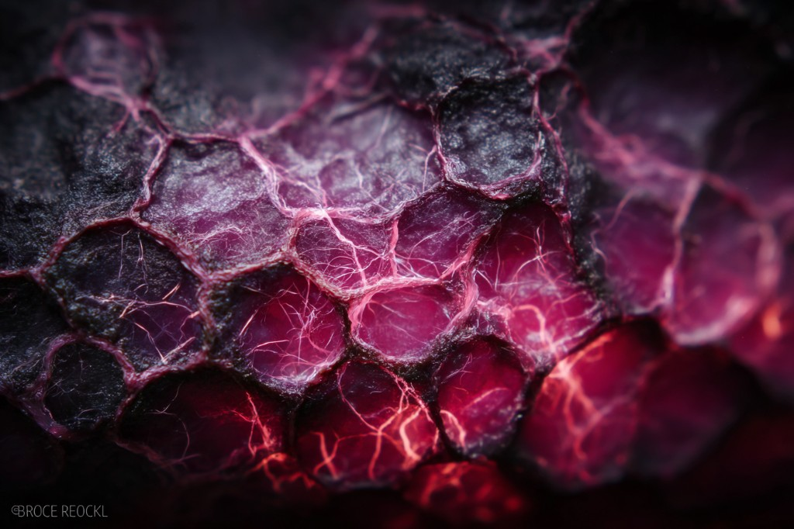
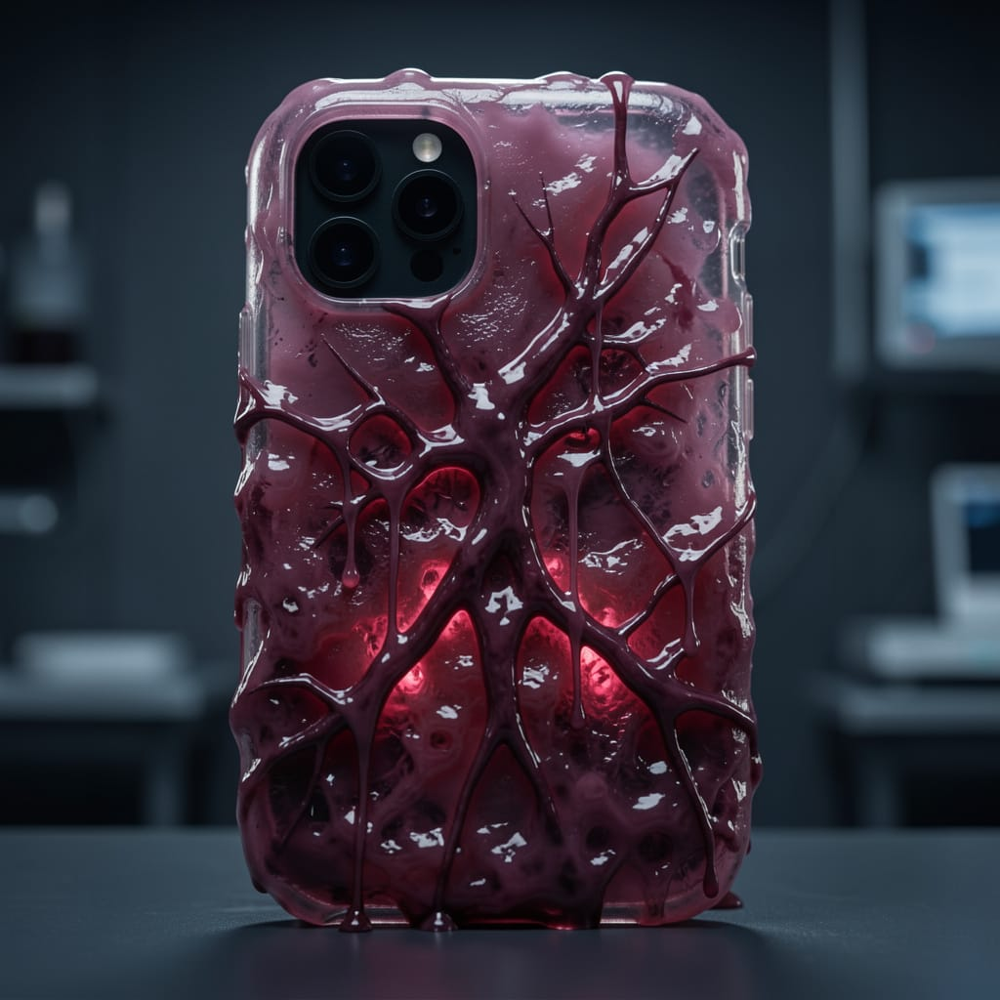
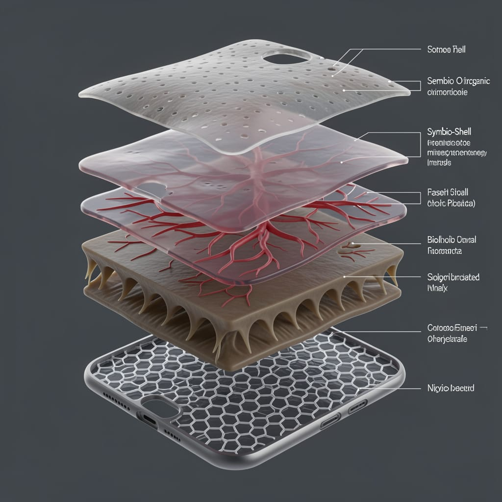
源文件位于 assets/symbio-01 … symbio-14 与 symbio-hero.png；与《共生壳》概念页图廊同步维护。